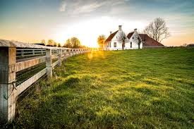
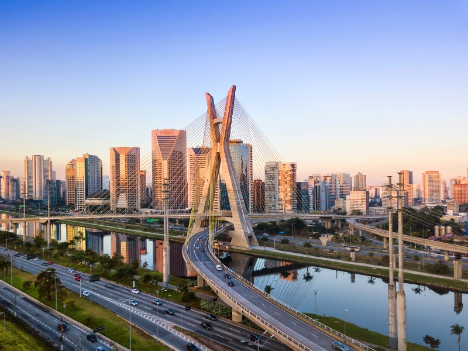

O campo é um ambiente marcado pela tranquilidade e pela natureza. As pessoas que vivem no campo geralmente têm uma relação mais próxima com a terra e os animais, e as atividades econômicas, como a agricultura e a pecuária, são predominantes.
Além disso, a vida no campo é caracterizada pela menor densidade populacional, menos poluição e um ritmo de vida mais lento. Embora o acesso a alguns serviços seja limitado, as pessoas no campo tendem a valorizar a comunidade e as relações interpessoais.
A cidade é o centro da modernidade, onde a tecnologia, cultura e atividades econômicas se encontram. A vida urbana é marcada pela agitação, grandes avenidas e uma infraestrutura mais desenvolvida. As cidades oferecem uma variedade de serviços, como escolas, hospitais, transporte público e opções de entretenimento.
Porém, a vida nas grandes cidades pode ser estressante, com alta poluição, aglomeração e distanciamento da natureza. O ritmo acelerado e a busca constante por produtividade também geram uma dinâmica diferente em relação ao campo.
Vamos analisar as principais diferenças entre a vida no campo e na cidade. Abaixo, você encontra um gráfico que ilustra alguns aspectos fundamentais das duas realidades.